fizz & go™ easy mix
butelka termiczna
ze stali nierdzewnej
i Tritanu, granatowa,
710 ml
idealnie schłodzone napoje nawet do 6H
idealnie schłodzone napoje nawet do 6H
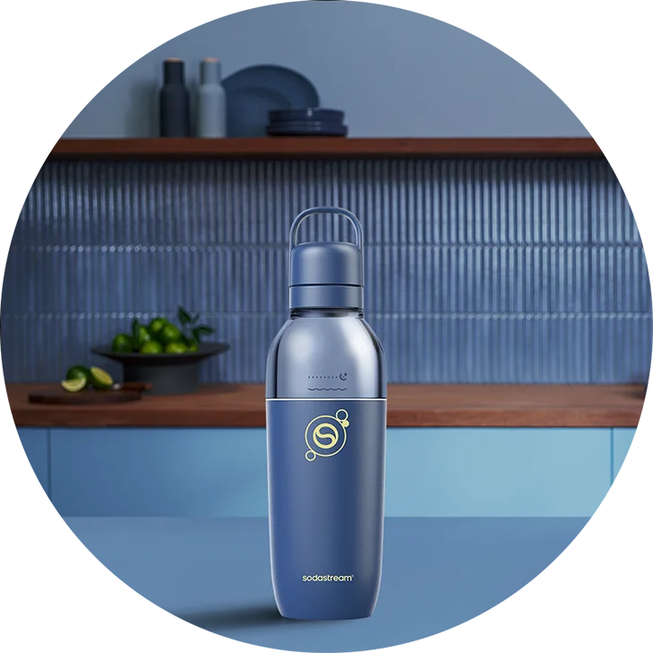

odkryj Sodastream fizz&go™ easy mix
Szukasz butelki do gazowania wody w saturatorze, szczelnego bidonu lub stylowego kubka? Z Sodastream fizz&go™ easy mix nie musisz wybierać – to rozwiązanie 3 w 1, które dopasuje się do Twoich potrzeb! Dzięki wszechstronności i modułowej konstrukcji w kilka sekund zmienisz jej funkcję i dostosujesz ją do sytuacji. Czym jeszcze Cię zachwyci? Unikalnym designem w stylowym, matowym granacie, który pasuje do każdej stylizacji – sportowej, casualowej, a nawet eleganckiej.
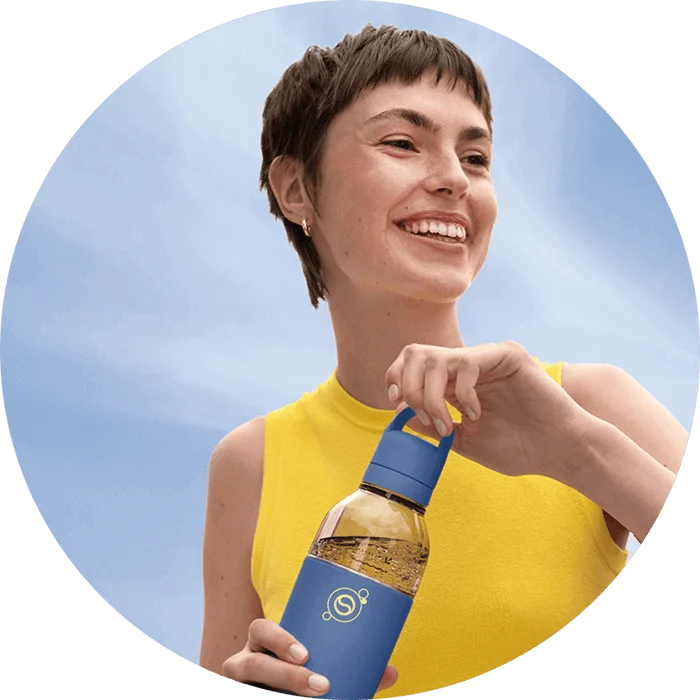
nowoczesna
klasyka
klasyczny granat Uniwersalny odcień wcale nie musi być nudny! To klasyka w najlepszym wydaniu, która spaja Twój look i subtelnie go dopełnia.
postaw na kolor dopasowany do Ciebie
Klasyczny granat, piaskowy beż czy subtelna mięta? Wyraź swój styl w każdym detalu!
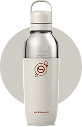
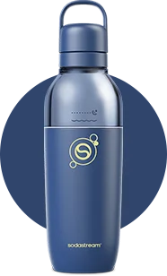
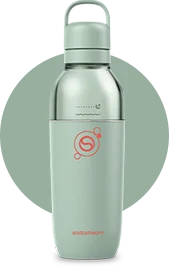
wygodnie, przyjemnie, stylowo
Przyjemny, orzeźwiający chłód napoju, który nie znika po pierwszym łyku, szczelność bez nieprzyjemnego przeciekania oraz łatwe, bezobsługowe czyszczenie – Sodastream fizz&go™ easy mix to Twój niezawodny towarzysz każdego dnia. Dzięki połączeniu stali nierdzewnej i Tritanu butelka jest niezwykle odporna na uszkodzenia i zachowuje elegancki wygląd na lata, a modułowa konstrukcja umożliwia szybkie i sprawne mycie, także w zmywarce. Co więcej, utrzymuje chłód napojów nawet przez 6 godzin, zapewniając orzeźwienie zawsze wtedy, gdy go potrzebujesz.
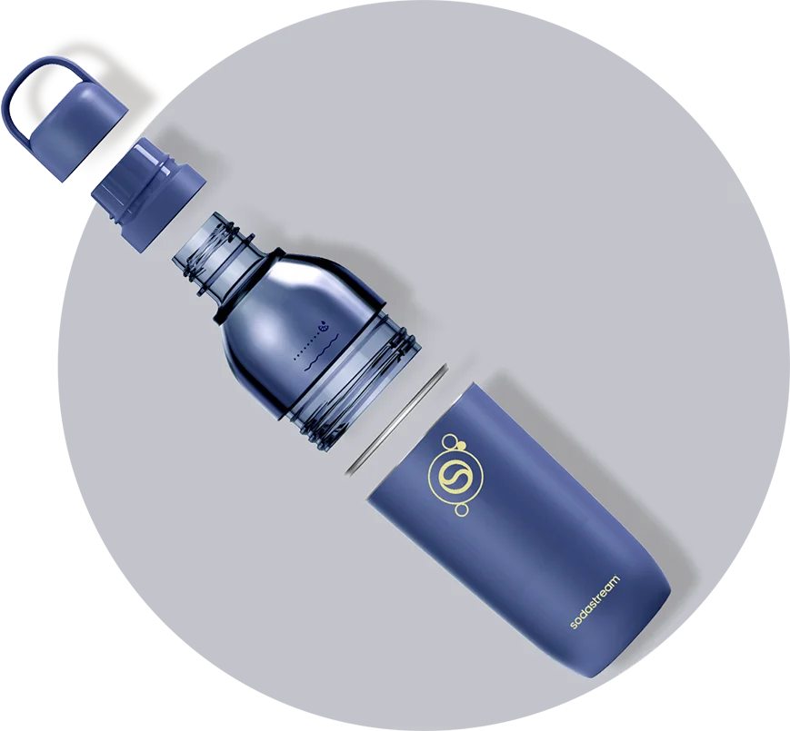
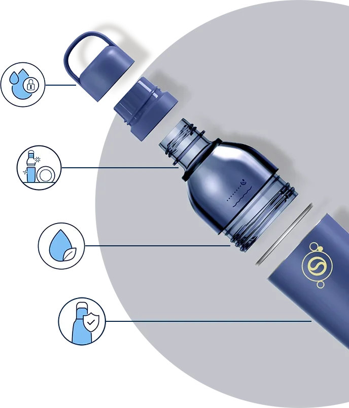
szczelny korek
odpowiednia do
mycia w zmywarce
Tritan wolny od BPA
Stal nierdzewna 18/8 odporna na korozję i uszkodzenia
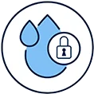
Szczelny korek
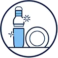
Odpowiednia do mycia w zmywarce
Tritan wolny od BPA
Stal nierdzewna 18/8 odporna na uszkodzenia i korozję
Sodastream fizz&go™ easy mix codzienna wygoda w duchu eko
Małe decyzje mogą mieć wielką moc i znaczenie – warto więc zmieniać codzienne nawyki na lepsze! Już dziś
możesz zastąpić
jednorazowe butelki i kubki wielorazowym rozwiązaniem, które wprowadzi styl i ekologiczne zmiany
do Twojej codzienności.
Ciesz się swoją butelką Sodastream fizz&go™ easy mix
przez lata i z zmieniaj świat na lepsze!
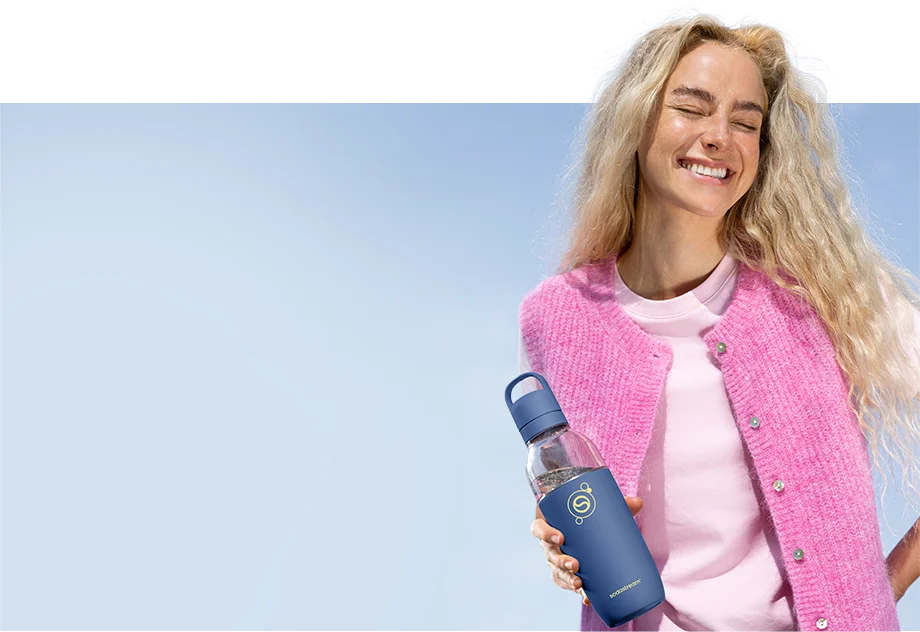
wszystko co warto wiedzieć
o Sodastream fizz&go™ easy mix
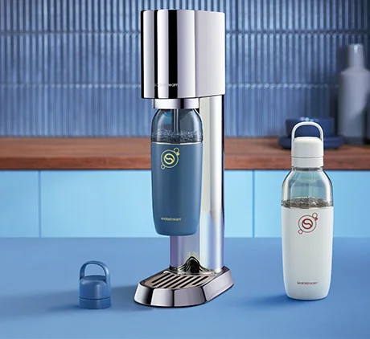
Czy w butelce Sodastream fizz&go™ easy mix można nagazować wodę?
Tak! Butelka jest kompatybilna z saturatorami Sodastream® Terra, Art, Mix i Ensō, co pozwoli Ci
przygotować świeże
bąbelki bezpośrednio w butelce, którą później zabierzesz ze sobą w drogę.
Z czego zrobiony jest kubek, w który zmienia się
butelka po odkręceniu górnej części?
Kubek wykonany z wysokiej jakości stali nierdzewnej, odpornej na uderzenia i korozję, ma podwójne
ścianki, które pomagają zachować chłód napojów na dłużej. To stylowy model w klasycznym granatowym
odcieniu, który
świetnie wygląda w
dłoni oraz na biurku.
Czy butelka Sodastream fizz&go™ easy mix może być myta w zmywarce?
Tak! Ten model jest w pełni przystosowany do mycia
w zmywarce. Dzięki możliwości rozłożenia butelki na cztery części jej mycie jest niezwykle
dokładne
–
każdy element
można dokładnie domyć, nawet jeśli użyjesz jej jako shakera do białka lub dodasz do wody dodatki,
takie jak przyprawy czy owoce.
idealnie dopasowana do Ciebie i Twojego planu dnia
Butelka Sodastream fizz&go™ easy mix podąża Twoim śladem, dbając o optymalny poziom nawodnienia o każdej porze dnia. Gdy Twoje plany się zmienią, dostosuje się do Ciebie – zmieniając się w bidon na wodę, shaker do białka lub kubek na kawę i orzeźwiające napoje.
Pokochają ją podróżnicy – mieści się w uchwycie samochodowym, nie przecieka w plecaku i
dotrzymuje kroku nawet w trasie. Niech towarzyszy Ci, gdy
przemierzasz górskie szlaki lub podziwiasz miasto
z tarasu widokowego.
Docenią ją zabiegani – nagazujesz wodę i zabierzesz ze sobą do pracy, na uczelnię czy na zakupy.
A gdy będziesz mieć ochotę na kawę, zamieni
się w stylowy kubek, z którym ruszysz w drogę. Na koniec dnia możesz ją rozkręcić i szybko umyć, aby
była gotowa na
kolejny dzień.
Wybiorą ją aktywni – sprawdzi się jako bidon, niezawodny towarzysz treningu i wygodny shaker do
odżywki. Wielofunkcyjna, wytrzymała i
szczelna, bez problemu nadąża za intensywnym tempem, a jej stylistyka i kolor świetnie dopełniają
sportowy look.
Zostanie z minimalistami na dłużej – zastępuje kilka gadżetów jedną, dobrze zaprojektowaną formą.
Wybierz ją dla siebie lub jako prezent dla osoby, która ceni funkcjonalność i doskonały
design!
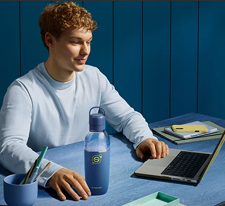
więcej możliwości, więcej smaku!
Zmień zwykłą wodę z kranu w prawdziwe, bąbelkowe orzeźwienie – odtwórz ulubione napoje gazowane bez wychodzenia z domu!
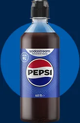
legendarne smaki w domowej wersji
Kultowe smaki, takie jak Pepsi®, 7UP®, Mirinda® czy MTN Dew®, przyrządzisz teraz samodzielnie w kuchni. Wybierz syrop, dostosuj jego intensywność oraz ilość bąbelków i ciesz się idealnie przygotowanym napojem – doskonałym na domówkę, letniego grilla czy relaksujący wieczór solo.
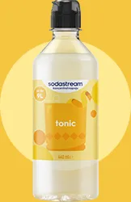
niezawodne klasyki z twistem
Zanurz się w orzeźwieniu z klasycznymi wariantami syropów Sodastream! Wybieraj spośród smaków Coli, Tonicu, Xtreme Energy i twórz autorskie kompozycje napojów, które świetnie smakują zarówno solo, jak i z dodatkami. Jakim napojem zaskoczysz dziś bliskich?
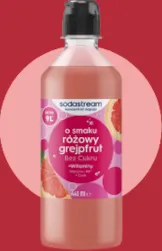
słoneczny smak lata w butelce
Poczuj smak lata z owocowymi syropami bez dodatku cukru! Przygotuj pyszne i kolorowe lemoniady na bazie syropów Sodastream o smakach Malinowym, Marakui oraz Pomarańczy Mango. To idealny sposób na relaks, który przypomni Ci letnie dni – bez cukru, bez kompromisów, za to z maksimum smaku.